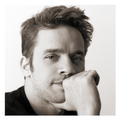
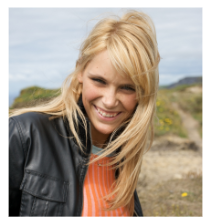
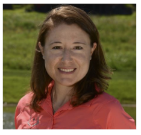
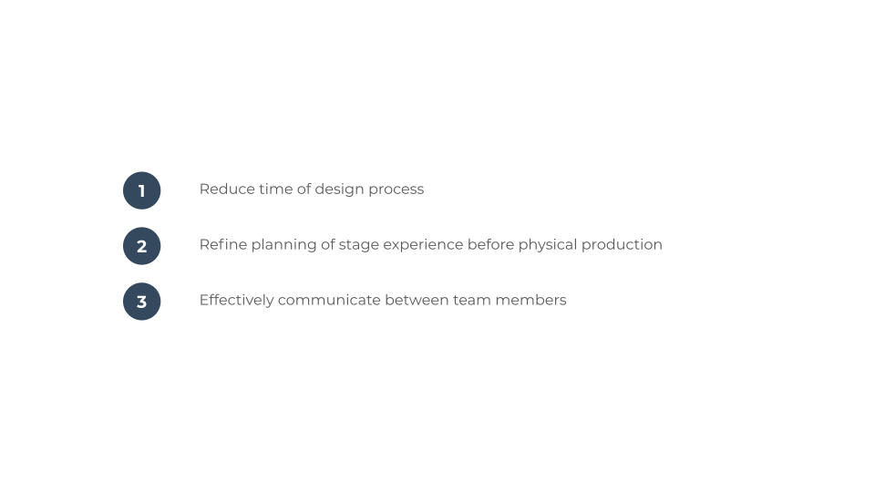

Aligning with Client’s Goals
Challenges
As someone who has no prior knowledge of how the theatre and opera industry worked, this was my first challenge. Second, given the scope of the project, there were numerous areas that we could focus on. Lastly, I had approximately 3 months to finish this project. To begin, I needed to understand the current workflow process of how things worked at theatre houses. From my discussions with the client, this was my understanding.
Problem
Next, was understanding the problem. As can be seen, theatres like the Metropolitan Opera utilize 2D and 3D technologies in rendering models for production planning. Furthermore, miniature physical models are constructed to showcase and review working concepts. Due to this process, the creativity of the designers is limited within the 2-D and 3-D realm. Not only that, but the time allocated towards constructing these models can take months for a final decision. Our solution was to create a tool using Mixed Reality to help fix this issue.
Empathizing with Users
As mentioned before, the client had many ideas that he wanted to incorporate. However, I asked him what should we prioritize for our users? Wait a sec, but who are our main users and what issues did they face?
Together, we went over the different stakeholders this project would be affected directly. There were five departments: Management, Design, Construction, and Staging. These were further broken down by specific roles. In addition to our documentation, we included those that would be affected by our system indirectly.
Target Audience
Now, our target users. We narrowed it down to three roles: Director, Scenic Designer, and Production Manager. If I had additional help and time, I would have conducted one-on-one interviews to construct personas that would more accurately reflect our users. In addition, it would have helped with giving this product in-progress more value than a working concept. Instead, I decided to create the personas through research online and talking with my client. After a few iterations with this flow, I created Jonathan Graham, Dianne Robinson, and Rachel Moore.
Jonathan Graham
As a director at age 37, his main role is to visualize concepts to prepare for production. At the same time he wants to ensure the quality and completeness of the scene is doable. In result, he needs to relay detailed and constructive feedback to the different teams in order to achieve the vision that he has in mind.
Rachel Moore
A 34 year-old Scenic Designer who wants to discover the best creative route of setting the scene. She wants to be able to manipulate objects easily to convey her ideas. At the same time, speed up time when designing and receiving feedback more frequently. Her main frustration, unable to use her creativity to its fullest.
Dianne Robinson
Age 46 and a Production Manager that wants to deliver a stage performance that fits within the time constraints and budget. It can be frustrating when changes to the scene take longer than predicted. Even more frustrating when the designer and director don't agree with the feedback given.
After creating the personas, I continued by constructing use cases. How would the application fit Jonathan's and Rachel's current work routine? One use case reflected the Director's role and the second followed the Scenic Designer's route. I realized that the third persona, Production Manager, wasn't as unique as planned. The duties of the PM ended up overlapping with the Director's route. We found that reducing it to two use cases would keep our application as minimal as possible, but with high impact.
Goals
After understanding more about the day to day actions of our users, it was easier to define our goals for the MVP.
An application that would reflect the following:
User Flow
Throughout the duration of the project, I wanted to make it as interactive as possible with the small-time slot I had with him. Essentially, I wanted to get a better understanding of my client and get as much feedback as possible. Casual meetings with the client took place once per week approximately taking 2hrs each session. For this case, I used Figma as a tool to storyboard how users would interact with the application.

We knew who to design the system for, but what exact tools did they need for a typical workday? What tasks did scenic designers and directors need to to achieve their goals? In addition, how can we optimize their current workflow process and keep consideration of their technical abilities? These were questions we discussed to help in figuring out the main functionalities of the program.
First I focused on one persona > gave them a task > and drew up low-fidelity wireframes that followed a step-by-step process if they were to use the application.
Example:
Rachel Moore, a Scenic Designer wants to create a new scene and add props to the environment.
To plan out our MVP, we took the time in understanding our potential users
Stakeholders
Who will be directly or indirectly affected by our system? Deliverable
- Documentation of positions with descriptions
Personas
To focus on a user centered design approach, we narrowed down our target audience to three main roles in the theatre business. This included:
- Director
- Scenic Designer
- Production Manager
Use Cases
After understanding each persona’s goals, frustrations, and technology abilities we moved on to creating use cases. How can they use our application with their current work flow? To answer this question, I listed down their role along with the task they were trying to accomplish.
User Flow
We knew who to design the system for, but what exact tools did they need for a typical work day? What tasks did scenic designers and directors need to to achieve their goals? In addition, how can we optimize their current work flow process and keep consideration of their technical abilities. These were questions we discussed to help in figuring out the main functionalities of the program. I decided to use the tool Figma to create low-fidelity wireframes. First I focused on one persona, gave them a task, and drew up low-fidelity wireframes that followed their process if they were to use the application. I worked with the client weekly and used Figma as a collaboration tool to figure out how the users would interact with the application.
Asides from the VR application, users would also need to utilize the website for additional features of the program. In this case, I created User Flow Diagrams with Lucidchart to demonstrate their actions to reach their goals for the website UI.
Personas
To focus on a human centered design approach, we narrowed down our target audience to three main roles in the theatre business. This included:
- Director
- Scenic Designer
- Production Manager
Defining User Needs
Prioritize Opportunities
After a few weeks of discussing the different personas, we came to the conclusion of our final flow. I decided that we should dive in further to discuss the details with the developer and make any changes needed when walking through the process.
Competitor Review
It took a bit of time to figure out our final MVP. However, I wanted to make sure that we were on the right track and look into our competition. Where exactly does our product stand out? Are there any opportunities or threats that we should take in consideration? How can we be progressive with this application to avoid copying other products?
Collaborating with Developer & Understanding Technical Limitations
The client had an idea of how the application would function. However, I wanted to make sure the features we were discussing were viable. I decided to use InVision Freehand to collaborate with the developer to see what was possible.
Design
Website Interface: Sitemap
Based off of the work we previously finished, I had enough information to begin designing the user interface. The MVP of the project was the VR Program. However, I created a sitemap of what would be needed to use the website with the product.
Low-fidelity Wireframe Concept of Website
VR Application: Wireframes
For the VR application I used Sketch to create the wireframes. I made a total of 20 screens and mapped out the features discussed that would be integrated.
Outcome
After working with David on this project, it has been an eye opening experience. This was my first time designing for VR technologies and touching base with the theatre industry. I learned a lot about working independently, collaborating directly with a client, and understood more about the need for UX in product development. As of now the project is a patent in-progress and I can’t wait to see what it will hold in the future :).